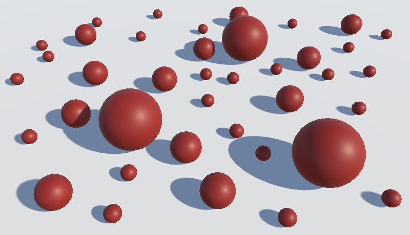
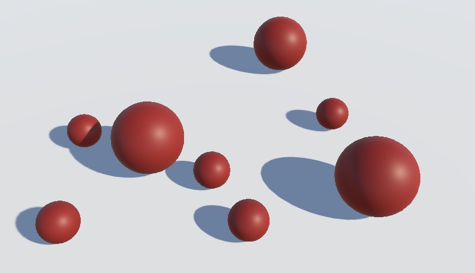
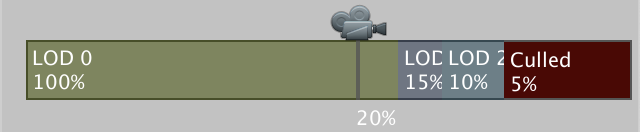
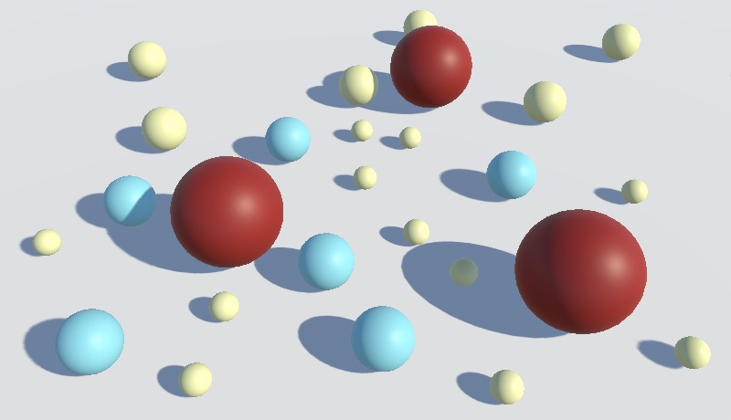

Level of Detail
Cross-Fading Geometry
- Design regular and additive LOD groups.
- Cross-fade LOD levels.
- Apply screen-space dithering.
- Use an animated dither pattern.
- Strip unused shader variants.
This is the tenth installment of a tutorial series covering Unity's scriptable render pipeline. It adds support for cross-fading LOD groups and shader variant stripping.
This tutorial is made with Unity 2018.4.4f1.
Culling Details
Ideally, we render as little as possible. The fewer gets rendered, the less strain there is on the GPU, which means that we can get a higher frame rate and require less energy to render the scene. If something becomes so visually small that it is no longer visible—smaller than a single pixel—then we can skip rendering it. It is also possible to skip things when they would still be visible, but small enough that their absense would go mostly unnoticed. Thus, we can control the level of detail of our scene.
LOD Groups
The typical approach to create a level-of-detail object is to use a root object with a child object for each detail level. The most detailed or complete visualization level is known as LOD 0. As an example, let's create a prefab that has a single sphere child. As always, we use our own material, and also use an InstancedMaterialProperties component to give it an obvious color, like red.

The visual level of detail of an object can be controlled by adding a LOD Group component to a game object's root. It has three LOD levels by default. The displayed percentages correspond to the estimated visual size of the object, expressed as how much of the viewport it covers, vertically. As long as that stays above 60% then LOD 0 is used, otherwise it switches to a lower LOD level, until the object gets culled completely below 10%. Drag the sphere child onto the LOD 0 box, so its rendered gets used for the LOD 0 visualization.
You can adjust the thresholds by dragging them and can also add or remove levels via a popup menu by right-clicking them. As we only have a single LOD level, remove the other two. This means that we always show the sphere, until its visual size drops below 10%. At least, that's the case when there is no LOD bias. There is a global LOD bias that can be used to adjust all LOD thresholds. It can be set via code and via the Quality panel of the project settings. For example setting Lod Bias to 1.5 means that the visual size of objects are overestimated by the same factor, so that our spheres only get culled when they drop below 6.7%. The inspector of the LOD group will indicate that a bias is in effect.

Multiple LOD Levels
Typically an object has multiple LOD levels, each using a progressively simpler mesh. To clearly see different LOD levels being used, duplicate the sphere child twice to create LOD levels 1 and 2, and give each a different color. Then add them to the LOD group, for example at the 15% and 10% thresholds, shifting complete culling to 5%.


You can now see the LOD selection in action, either by moving the camera or adjusting the LOD bias.
Additive LOD
Another way to create a LOD group it to add details to a base visualization. As an example, I created an abstract tree from cubes and spheres. The core of the tree is added to all three LOD levels. Smaller branches, leaves, and bark are added to the first two levels. And the smallest leaves and bark details are added only to LOD 0.
This works the same as using separate child hierarchies per LOD level, except that some objects are part of for multiple levels.
LOD Blending
When an object switches from one LOD level to another there is a sudden swap or removal of renderers, which can be visually obvious and jarring. The transition can be made more gradual by blending between adjacent LOD levels.
Cross-Fading
LOD blending is controller per LOD group and individual LOD level. First, set the group's Fade Mode to Cross Fade. That will make an Animate Cross-fading toggle option appear, which allows you to choose between fading based on percentage or time. When enabled, a timed transition will happen when a LOD change should occur, which will last only a short while even if the object's visual size no longer changes. The transition duration can be globally set via LODGroup.crossFadeAnimationDuration and is half a second by default. When disabled the cross-fade is based on the visual percentage and the exact range can be configured per LOD level, via their Fade Transition Width slider. When set to 1 the cross-fade will cover the entire range of the LOD level. That will make the transition most gradual but also means that transitions are used all the time. It's better to avoid that, because during a transition both LOD levels need to be rendered.
When cross-fading is being used Unity will select a shader variant with the LOD_FADE_CROSSFADE keyword, so add a multi-compile directive for it to the normal pass of our shader.
#pragma multi_compile _ LOD_FADE_CROSSFADE
To check whether fading is indeed used, make all fading fragments solid black in Lit.hlsl.
float4 LitPassFragment (
VertexOutput input, FRONT_FACE_TYPE isFrontFace : FRONT_FACE_SEMANTIC
) : SV_TARGET {
UNITY_SETUP_INSTANCE_ID(input);
#if defined(LOD_FADE_CROSSFADE)
return 0;
#endif
…
}
When all fade ranges are set to 1, this will make every sphere solid black, except those that end up visually larger than the viewport. In contrast, the trees that use additive LOD levels are only partially black with the same settings. Objects that are part of both LOD levels aren't included in the cross-fade and are rendered as normal.
How much an object should be faded is made available via the first component of the unity_LODFade vector, which is part of the UnityPerDraw buffer.
CBUFFER_START(UnityPerDraw) float4x4 unity_ObjectToWorld, unity_WorldToObject; float4 unity_LODFade; … CBUFFER_END
Returning that instead of solid black allows us to see the blend factor being used, although we can only see one of the two being used per fragment, due to overdraw. Transitions from the lowest LOD level to being clipped involve only a single object, so there is no overdraw in that case.
#if defined(LOD_FADE_CROSSFADE) return unity_LODFade.x; #endif
Screen-Space Position
In case of transparent geometry we could use the blend factor to fade out, but that isn't possible for opaque geometry. What we can do instead is clip a portion of the fragments based on the blend factor, just like cutout rendering. That works for both opaque and transparent geometry. But the fade factor is the same for all fragments rendered for an object, so only using that as a threshold for clipping would still produce a sudden transition. So we have to add variety to the clip threshold per fragment.
The simplest way to add variety per fragment is to base it on the fragment's screen-space position. Begin by directly using its XY components as the result of LitPassFragment.
float4 LitPassFragment (
VertexOutput input, FRONT_FACE_TYPE isFrontFace : FRONT_FACE_SEMANTIC
) : SV_TARGET {
UNITY_SETUP_INSTANCE_ID(input);
#if defined(LOD_FADE_CROSSFADE)
return float4(input.clipPos.xy, 0, 0);
#endif
…
The XY coordinates are provided as fragment indices, so that will make everything white. To get a sensible result, take some modulo of the screen-space position and divide that by the same value. Let's use 64.
#if defined(LOD_FADE_CROSSFADE) return float4((input.clipPos.xy % 64) / 64, 0, 0); #endif
The result is a grid filled with red-green gradient squares that repeat every 64 pixels. As it is relative to the screen, the pattern is always the same, even if the spheres visually change. We can use these coordinates to perform screen-space texture sampling.
Clipping
Let's create a separate method to clip based on LOD cross-fading. In it, clip just like for alpha-clipping, except based on the fade factor minus a bias instead of alpha minus the cutoff. Initially, use a 16-pixel vertical gradient for the bias.
void LODCrossFadeClip (float4 clipPos) {
float lodClipBias = (clipPos.y % 16) / 16;
clip(unity_LODFade.x - lodClipBias);
}
float4 LitPassFragment (
VertexOutput input, FRONT_FACE_TYPE isFrontFace : FRONT_FACE_SEMANTIC
) : SV_TARGET {
UNITY_SETUP_INSTANCE_ID(input);
#if defined(LOD_FADE_CROSSFADE)
//return float4((input.clipPos.xy % 64) / 64, 0, 0);
LODCrossFadeClip(input.clipPos);
#endif
…
}
We end up cutting horizontal bars out of our spheres. In some cases we can see part of both LOD levels, but even then parts are missing. That happens because when one LOD level clips, the other shouldn't, but right now they're independent. We have to make the bias symmetrical, which we can do by flipping it when the fade factor drops below 0.5.
float lodClipBias = (clipPos.y % 16) / 16;
if (unity_LODFade.x < 0.5) {
lodClipBias = 1.0 - lodClipBias;
}
clip(unity_LODFade.x - lodClipBias);
A downside of flipping the bias is that there is now an obvious visual change at the halfway point. This can also cause pattern interference when separate but visually overlapping objects flip at different times. In case of objects transitioning to getting culled, their visual intersection could become fully opaque.
We cannot avoid this until Unity provides additional data to the shader that allows us to identify which of the LOD levels is being rendered. Then we could always flip one side instead of doing it halfway for both sides. One way to do this is by always making one of the two fade factors negative, which might be done in a future version of Unity 2019.
Dithering
Using an obvious pattern for the bias is not a good idea. Instead, let's use a mostly uniform noise texture to perform dithering, which you can find here.
{kind=link}
All four channels of the texture contain the same data. Import it as an uncompressed single-channel texture, set to alpha. Also set its Filter Mode to Point, because we use the exact pixel values and don't need any interpolation. Thus it also doesn't need mip maps.
Add a texture field to MyPipelineAsset so we can assing the dither pattern to our asset.
[SerializeField] Texture2D ditherTexture = null;
Then pass it to the constructor invocation of MyPipeline.
return new MyPipeline( dynamicBatching, instancing, ditherTexture, (int)shadowMapSize, shadowDistance, shadowFadeRange, (int)shadowCascades, shadowCascadeSplit );
In MyPipeline, keep track of the texture.
Texture2D ditherTexture;
public MyPipeline (
bool dynamicBatching, bool instancing,
Texture2D ditherTexture,
int shadowMapSize, float shadowDistance, float shadowFadeRange,
int shadowCascades, Vector3 shadowCascasdeSplit
) {
…
this.ditherTexture = ditherTexture;
this.shadowMapSize = shadowMapSize;
…
}
Configure the dither pattern before rendering the cameras. This means setting the texture, and we'll also set its scale-transform data globally. We assume it is a 64×64 texture, so the UV scale becomes one divided by 64. We can use the camera buffer to do this.
static int ditherTextureId = Shader.PropertyToID("_DitherTexture");
static int ditherTextureSTId = Shader.PropertyToID("_DitherTexture_ST");
…
public override void Render (
ScriptableRenderContext renderContext, Camera[] cameras
) {
base.Render(renderContext, cameras);
ConfigureDitherPattern(renderContext);
foreach (var camera in cameras) {
Render(renderContext, camera);
}
}
void ConfigureDitherPattern (ScriptableRenderContext context) {
cameraBuffer.SetGlobalTexture(ditherTextureId, ditherTexture);
cameraBuffer.SetGlobalVector(
ditherTextureSTId, new Vector4(1f / 64f, 1f / 64f, 0f, 0f)
);
context.ExecuteCommandBuffer(cameraBuffer);
cameraBuffer.Clear();
}
On the shader side, we'll simply add the scale-transform to the UnityPerFrame buffer. Also define the texture and sample it with the transformed screen position to determine the clip bias used for cross-fading.
CBUFFER_START(UnityPerFrame)
float4x4 unity_MatrixVP;
float4 _DitherTexture_ST;
CBUFFER_END
…
TEXTURE2D(_DitherTexture);
SAMPLER(sampler_DitherTexture);
…
void LODCrossFadeClip (float4 clipPos) {
float2 ditherUV = TRANSFORM_TEX(clipPos.xy, _DitherTexture);
float lodClipBias =
SAMPLE_TEXTURE2D(_DitherTexture, sampler_DitherTexture, ditherUV).a;
if (unity_LODFade.x < 0.5) {
lodClipBias = 1.0 - lodClipBias;
}
clip(unity_LODFade.x - lodClipBias);
}
Because the dither pattern is sampled at the window's resolution it might be hard to see on high-resolution displays and screenshots. You can scale up the game game view to get a better look at it.
Cross-Fading Shadows
We can apply the same technique to shadows. The LOD is chosen during culling, so the LOD of objects and their shadows match. First, also add the multi-compile directive for LOD_FADE_CROSSFADE to the shadow caster pass.
#pragma shader_feature _CLIPPING_OFF #pragma multi_compile _ LOD_FADE_CROSSFADE
Then add the required data to ShadowCaster.hlsl.
CBUFFER_START(UnityPerFrame) float4x4 unity_MatrixVP; float4 _DitherTexture_ST; CBUFFER_END CBUFFER_START(UnityPerDraw) float4x4 unity_ObjectToWorld; float4 unity_LODFade; CBUFFER_END … TEXTURE2D(_DitherTexture); SAMPLER(sampler_DitherTexture);
Then copy LODCrossFadeClip and invoke it when appropriate in ShadowCasterPassFragment.
void LODCrossFadeClip (float4 clipPos) {
…
}
float4 ShadowCasterPassFragment (VertexOutput input) : SV_TARGET {
UNITY_SETUP_INSTANCE_ID(input);
#if defined(LOD_FADE_CROSSFADE)
LODCrossFadeClip(input.clipPos);
#endif
…
}
In the case of shadows the dithering is aligned with the shadow camera. Thus the dither pattern used for directional shadows moves differently than the one for the regular camera. The pattern for spotlight shadows only changes when the spotlight itself moves or rotates. But due to shadow filtering the pattern can get smudged.
Animated Dither Pattern
The dither pattern can be very obvious in our example scene, because of the high contract and large fade range. In general the contrast of a scene is much lower and smaller fade ranges are used, which makes the dithering less noticeable. But when it is obvious it can be distracting especially when part of the scene is moving, because the pattern remains visually fixed. It is possible to obfuscate this fact by animating the dither pattern, effectively scrambling it in time so it becomes noise that is easier to ignore.
The straightforward way to animate the pattern is to use a new one each frame. However, this can produce perceptive flickering when the frame rate isn't stable and can also aggravate visual tearing when vsync isn't used in combination with very high frame rates. We can try to mitigate this by using a fixed animation speed for the dither pattern. Add a slider option for that to MyPipelineAsset, with a 0–120 range and a default of 30 frames per second. This also makes it possible to slow the animation down so we can get a better look at it.
[SerializeField, Range(0f, 120f)] float ditherAnimationSpeed = 30f;
Add the speed to the constructor invocation.
return new MyPipeline( dynamicBatching, instancing, ditherTexture, ditherAnimationSpeed, (int)shadowMapSize, shadowDistance, shadowFadeRange, (int)shadowCascades, shadowCascadeSplit );
Instead of directly keeping track of the speed in MyPipeline, we only need to remember the frame duration, which is the inverse of the speed. Set it in the constructor, unless the speed is zero, in which case the duration remains zero as well. That way dither animation can be turned off completely, in case you don't like it or want to get exact results, which is useful for image-comparison purposes.
float ditherAnimationFrameDuration;
public MyPipeline (
bool dynamicBatching, bool instancing,
Texture2D ditherTexture, float ditherAnimationSpeed,
int shadowMapSize, float shadowDistance, float shadowFadeRange,
int shadowCascades, Vector3 shadowCascasdeSplit
) {
…
this.ditherTexture = ditherTexture;
if (ditherAnimationSpeed > 0f) {
ConfigureDitherAnimation(ditherAnimationSpeed);
}
…
}
void ConfigureDitherAnimation (float ditherAnimationSpeed) {
ditherAnimationFrameDuration = 1f / ditherAnimationSpeed;
}
The dither pattern can be animated by adding more textures and looping through them. But we can also make do with a single texture and adjust its scale-transform instead. That doesn't produce a high-quality animation, but can be enough for our purposes. If there is a positive speed, fill an array of sixteen ST vectors, which should produce enough unique frames.
We'll create unique frames by flipping the pattern horizontally every other frame and vertically every two frames. Then we offset the pattern by half every four frames horizontally, and vertically every eight frames.
Vector4[] ditherSTs;
…
void ConfigureDitherAnimation (float ditherAnimationSpeed) {
ditherAnimationFrameDuration = 1f / ditherAnimationSpeed;
ditherSTs = new Vector4[16];
for (int i = 0; i < ditherSTs.Length; i++) {
ditherSTs[i] = new Vector4(
(i & 1) == 0 ? (1f / 64f) : (-1f / 64f),
(i & 2) == 0 ? (1f / 64f) : (-1f / 64f),
(i & 4) == 0 ? 0f : 0.5f,
(i & 8) == 0 ? 0f : 0.5f
);
}
}
Although that produces sixteen unique configurations, the adjustments are regular and there is a lot of symmetry. We can break that up a bit by using a random offset per frame instead. To always use the same frames we first initialize the random state. Let's just use zero for the seed. Afterwards, we restore the old random state so our pipeline doesn't mess with the rest of the game's random state.
Random.State state = Random.state;
Random.InitState(0);
for (int i = 0; i < ditherSTs.Length; i++) {
ditherSTs[i] = new Vector4(
(i & 1) == 0 ? (1f / 64f) : (-1f / 64f),
(i & 2) == 0 ? (1f / 64f) : (-1f / 64f),
Random.value, Random.value
);
}
Random.state = state;
We don't need to synchronize the pattern animation with the game time, so we base it on the unscaled time. Also, we don't care about the animation's timing exact, only that a different pattern frame appears at a roughly fixed frequency. If one frame takes very long then we just go to the next pattern, we don't need to skip any to keep the animation synchronized with the time. Thus we only have to keep track of how much time has passes since the last pattern change. If it's been too long, move on to the next ST index.
float lastDitherTime;
int ditherSTIndex = 0;
…
void ConfigureDitherPattern (ScriptableRenderContext context) {
…
if (ditherAnimationFrameDuration > 0f) {
float currentTime = Time.unscaledTime;
if (currentTime - lastDitherTime >= ditherAnimationFrameDuration) {
lastDitherTime = currentTime;
ditherSTIndex = ditherSTIndex < 15 ? ditherSTIndex + 1 : 0;
cameraBuffer.SetGlobalVector(
ditherTextureSTId, ditherSTs[ditherSTIndex]
);
}
context.ExecuteCommandBuffer(cameraBuffer);
cameraBuffer.Clear();
}
}
But we only need to do this if we have a positive animation frame duration. And we also only have to initialize the texture once. We can achieve that by initially setting the ST index to −1 and based on that set things up once for both cases.
int ditherSTIndex = -1;
…
void ConfigureDitherPattern (ScriptableRenderContext context) {
if (ditherSTIndex < 0) {
ditherSTIndex = 0;
lastDitherTime = Time.unscaledTime;
cameraBuffer.SetGlobalTexture(ditherTextureId, ditherTexture);
cameraBuffer.SetGlobalVector(
ditherTextureSTId, new Vector4(1f / 64f, 1f / 64f, 0f, 0f)
);
context.ExecuteCommandBuffer(cameraBuffer);
cameraBuffer.Clear();
}
else if (ditherAnimationFrameDuration > 0f) {
…
}
Combining an animated dither pattern with enabling Animate Cross-fading for LOD groups should make the transitions as smooth as possible, especially when visual contrast isn't too high. But when working in the editor while not in play mode new frames are only rendered when something changes. This means that the dither pattern stays the same while we do nothing, but suddenly changes when we perform an action, which is distracting. So let's only animate it while in play mode. That can be done by checking Application.isPlaying before configuring the animation in the constructor.
if (ditherAnimationSpeed > 0f && Application.isPlaying) {
ConfigureDitherAnimation(ditherAnimationSpeed);
}
Shader Variant Stripping
The downside of adding all these features to our shader is that we end up generating many shader variants. This is manageable when using the shader-feature compiler directive, because only keywords that have been enabled for used materials get included in builds. But multi-compile directives aren't limited this way.
Unity is able to strip some keywords from builds automatically, based on what's used in scenes that are included in the build. In our case the affected keywords are LIGHTMAP_ON, DYNAMICLIGHTMAP_ON, and INSTANCING_ON. That still leaves a lot of keywords, some of which might not be needed in every build. Fortunately, Unity provides a way for us to strip shader variants from builds ourselves.
Preprocessing Shaders
When a build is made, the Unity editor will look for any class that implements the IPreprocessShaders interface, defined in the UnityEditor.Build namespace. It will create an instance of the class and will then provide it with shader variants to strip. Create a definition for such a class in an Editor folder.
using UnityEditor.Build;
public class MyPipelineShaderPreprocessor : IPreprocessShaders { }
The interface requires us to implement two things. First, a callbackOrder getter property that returns an integer. It is used to determine the order in which the preprocessors are invoked, in case there are multiple. We can simply return zero.
public int callbackOrder {
get {
return 0;
}
}
Second, an OnProcessShader method that is passed a shader, shader snippet data, and a list of compiler data that contain information about a set of shader variants. Let's initially have it log the name of the shader.
using System.Collections.Generic;
using UnityEditor.Build;
using UnityEditor.Rendering;
using UnityEngine;
public class MyPipelineShaderPreprocessor : IPreprocessShaders {
…
public void OnProcessShader (
Shader shader, ShaderSnippetData snippet, IList<ShaderCompilerData> data
) {
Debug.Log(shader.name);
}
}
Now when we build the project a lot of shader names get logged. These include our shaders, but also a lot that get included by default, some of which you can manage via the Graphics panel of the project settings. There will also be a lot of duplicates due to the way the shader compilation process breaks up shader variants, but we don't need to worry about the exact order and grouping.
Only Preprocessing Our Pipeline
All preprocessors that have been defined will get used for every build. So if our preprocessor is in a project it will always get used, even if the project doesn't use our custom pipeline. To make sure that we don't meddle with other pipelines we need to verify that the current pipeline is indeed ours. We can do that by retrieving the asset of the pipeline currently in use via GraphicsSettings.renderPipelineAsset and checking whether its type is MyPipelineAsset.
…
using UnityEngine.Rendering;
public class MyPipelineShaderPreprocessor : IPreprocessShaders {
…
public void OnProcessShader (
Shader shader, ShaderSnippetData snippet, IList…ShaderCompilerData> data
) {
if (!(GraphicsSettings.renderPipelineAsset is MyPipelineAsset)) {
return;
}
Debug.Log(shader.name);
}
}
Having access to the pipeline asset will be useful later, so let's keep track of it with a field that we initialize once in the constructor method.
MyPipelineAsset pipelineAsset;
public MyPipelineShaderPreprocessor () {
pipelineAsset = GraphicsSettings.renderPipelineAsset as MyPipelineAsset;
}
public void OnProcessShader (
Shader shader, ShaderSnippetData snippet, IList…ShaderCompilerData> data
) {
if (pipelineAsset == null) {
return;
}
Debug.Log(shader.name);
}
Counting Shader Variants
Before we start stripping variants, let's first find out how many there are. Each entry in the shader compiler data list represents one variant, so we have to sum them across all invocations of OnProcessShader.
int shaderVariantCount;
…
public void OnProcessShader (
Shader shader, ShaderSnippetData snippet, IList<ShaderCompilerData> data
) {
…
//Debug.Log(shader.name);
shaderVariantCount += data.Count;
}
To only log once per build, we can add a method with the PostProcessBuild attribute, from the UnityEditor.Callbacks namespace. It has an argument to set its callback order, for which we'll again use zero. The method must have a UnityEditor.BuildTarget parameter along with a string for the path where the build is stored. Unity will invoke all such methods after the build process has been completed.
using System.Collections.Generic;
using UnityEditor;
using UnityEditor.Build;
using UnityEditor.Callbacks;
…
public class MyPipelineShaderPreprocessor : IPreprocessShaders {
…
[PostProcessBuild(0)]
void LogVariantCount (BuildTarget target, string path) {
if (pipelineAsset == null) {
return;
}
Debug.Log("Included " + shaderVariantCount + " shader variants.");
}
}
The method must be static, so let's keep track of a static instance of our preprocessor as well, so we can retrieve the count. We can get rid of the instance after logging.
static MyPipelineShaderPreprocessor instance;
…
public MyPipelineShaderPreprocessor () {
instance = this;
pipelineAsset = GraphicsSettings.renderPipelineAsset as MyPipelineAsset;
}
…
[PostProcessBuild(0)]
static void LogVariantCount (BuildTarget target, string path) {
instance.LogVariantCount();
instance = null;
}
void LogVariantCount () {
if (pipelineAsset == null) {
return;
}
Debug.Log("Included " + shaderVariantCount + " shader variants.");
}
We can now see how many shader variants got included in a build. How many there are depends on what scenes got included. In my case, I got a log entry that read "Included 3054 shader variants." followed by the final build log that indicated a successful build.
Stripping Cascaded Shadows
An example of shader variants that we can safely strip are those for cascaded shadows. If we set Shadow Cascades of our pipeline asset to Zero then they are never used, so don't need to be included in builds.
First, we must make it possible for the preprocessor to check whether the pipeline has shadow cascades enabled. We can do that by adding a public boolean getter property to MyPipelineAsset that returns whether the shadow cascades aren't zero.
public bool HasShadowCascades {
get {
return shadowCascades != ShadowCascades.Zero;
}
}
Have the preprocessor use the property to determine whether it should strip cascaded shadow variants. We can do this once in the constructor and keep track of the decision.
bool stripCascadedShadows;
public MyPipelineShaderPreprocessor () {
instance = this;
pipelineAsset = GraphicsSettings.renderPipelineAsset as MyPipelineAsset;
if (pipelineAsset == null) {
return;
}
stripCascadedShadows = !pipelineAsset.HasShadowCascades;
}
To check whether a keyword is used by a variant, we need to create ShaderKeyword structs for them. Do this once for the two cascaded shadows keywords and store them in static fields.
static ShaderKeyword cascadedShadowsHardKeyword =
new ShaderKeyword("_CASCADED_SHADOWS_HARD");
static ShaderKeyword cascadedShadowsSoftKeyword =
new ShaderKeyword("_CASCADED_SHADOWS_SOFT");
Next, create a Strip method that takes a simple shader compiler data set as input and returns whether that variant should be stripped. This is the case when cascaded shadows should be stripped and one of the two relevant keywords is enabled. That can be checked by invoking IsEnabled on the data's shader keyword set.
bool Strip (ShaderCompilerData data) {
return
stripCascadedShadows && (
data.shaderKeywordSet.IsEnabled(cascadedShadowsHardKeyword) ||
data.shaderKeywordSet.IsEnabled(cascadedShadowsSoftKeyword)
);
}
Now we can loop through all data sets in OnProcessShader and remove those that should be stripped. Do this after increasing the shader variant count so that we keep track of the original count.
public void OnProcessShader (
Shader shader, ShaderSnippetData snippet, IList<ShaderCompilerData> data
) {
if (pipelineAsset == null) {
return;
}
shaderVariantCount += data.Count;
for (int i = 0; i < data.Count; i++) {
if (Strip(data[i])) {
data.RemoveAt(i--);
}
}
}
Reporting Stripped Variants
Support for cascaded shadows can now get stripped from builds, but we don't get any feedback about this yet. The only clue that it happens is that the build time and size has decreased. To make it clear exactly how many shader variants got included in the build, also keep track of how many were stripped. We can do that by simply increasing the stripped count each time a variant gets stripped.
int shaderVariantCount, strippedCount;
…
public void OnProcessShader (
Shader shader, ShaderSnippetData snippet, IList<ShaderCompilerData> data
) {
…
for (int i = 0; i < data.Count; i++) {
if (Strip(data[i])) {
data.RemoveAt(i--);
strippedCount += 1;
}
}
}
When logging, mention both the final and original variant count. As a nice touch, let's also log the percentage of the included variants.
void LogVariantCount () {
if (pipelineAsset == null) {
return;
}
int finalCount = shaderVariantCount - strippedCount;
int percentage =
Mathf.RoundToInt(100f * finalCount / shaderVariantCount);
Debug.Log(
"Included " + finalCount + " shader variants out of " +
shaderVariantCount + " (" + percentage + "%)."
);
}
In my case, with shadow cascades disabled I got "Included 1518 shader variants out of 3054 (50%)." which is a significant reduction. Note that we decide to strip cascaded shadows purely based on whether they have been disabled by the asset. This means that if they are enabled but not used in any scene, the variants still get included in builds. So you have to match the pipeline's configuration with what's really needed in a build.
Stripping Cross-Fading
As another example, let's make it possible to strip LOD cross-fading from builds. This is a feature that isn't directly controlled by our pipeline. It simply gets used when a LOD group needs it. But we can still add a toggle option to MyPipelineAsset to indicate whether it should be supported, with an accompanying public getter property.
public bool HasLODCrossFading {
get {
return supportLODCrossFading;
}
}
…
[SerializeField]
bool supportLODCrossFading = true;
Stripping variants for cross-fading works exactly like stripping those for cascaded shadows, except that it relies on the LOD_FADE_CROSSFADE keyword and a different property. Add the required code to our preprocessor. The Strip method has to return true when either shadow-stripping or cross-fade-stripping applies.
static ShaderKeyword lodCrossFadeKeyword =
new ShaderKeyword("LOD_FADE_CROSSFADE");
…
bool stripCascadedShadows, stripLODCrossFading;
public MyPipelineShaderPreprocessor () {
…
stripCascadedShadows = !pipelineAsset.HasShadowCascades;
stripLODCrossFading = !pipelineAsset.HasLODCrossFading;
}
…
bool Strip (ShaderCompilerData data) {
return
stripCascadedShadows && (
data.shaderKeywordSet.IsEnabled(cascadedShadowsHardKeyword) ||
data.shaderKeywordSet.IsEnabled(cascadedShadowsSoftKeyword)
) ||
stripLODCrossFading &&
data.shaderKeywordSet.IsEnabled(lodCrossFadeKeyword);
}
In my case, disabling LOD cross-fading reduces the shader variants to 1878 (61%). And when cascaded shadows are also disabled this is reduced further to 1110 (36%).
Note that disabling support for LOD cross-fading only affects which shader variants get stripped. Cross-fading still works in the editor, but won't in builds. So only disable it when you're sure that it doesn't get used.
It is also possible to strip specific keyword combinations, individual passes, or even entire shaders. Stripping individual keywords based on what's needed is the most straightforward, but that alone can already significantly reduce what gets included in a build.
The next tutorial is Post-Processing.